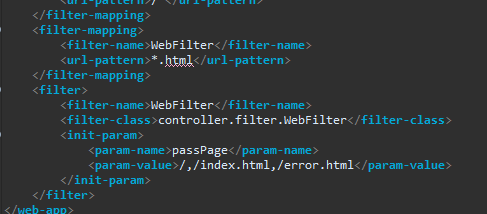
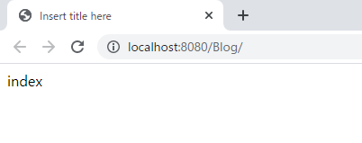
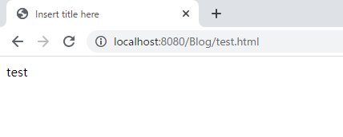
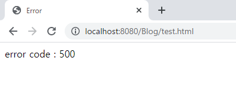

[Java] 54. Spring frameworkでWeb filterを使う方法
こんにちは。明月です。
この投稿はSpring frameworkでWeb filterを使う方法に関する説明です。
我々がウェブサービスを構築する時にセッション管理やメモリ管理などのブラウザ要請に関する全体的に管理および設定が必要なことがあります。
例えば、ログインした後でサーバ側ではユーザのセッションがあるかどうかの確認する場合があります。ユーザのセッションがある場合はユーザがログインしている状況になります。
同然ですが、ユーザのセッションが格納されてない場合は当該なページからログインページに遷移やログイン要求をしなければならないです。
※ 参考にセッション値とはサーバ側から管理するデータです。そのデータはブラウザのクッキー値にセッションキーをいれ、ブラウザのクッキー値が初期化及び満了にならないならサーバ側でキーとして格納されているデータを取得することです。
方法としてはControllerで関数を呼び出すところの開始するところにセッションチェックする部分を実装して解決しても構いないです。
でも、もっと簡単な方法としてはブラウザから呼び出しする時、常に呼び出す関数Filterクラスを利用してセッション可否を確認する方法もあります。
フィルダーはまず、web.xmlでどのurlパターンでどのクラスを呼び出すかを設定します。
<!-- *.html拡張子で呼び出す要請はWebFilterのフィルダー名を呼び出す。 -->
<filter-mapping>
<filter-name>WebFilter</filter-name>
<url-pattern>*.html</url-pattern>
</filter-mapping>
<!-- フィルダー -->
<filter>
<!-- フィルダー名を設定 - WebFilter -->
<filter-name>WebFilter</filter-name>
<!-- 呼び出すクラス名を設定(package名含め) -->
<filter-class>controller.filter.WebFilter</filter-class>
<!-- クラスで使うパラメータのデータ -->
<init-param>
<param-name>passPage</param-name>
<param-value>/,/index.html,/error.html</param-value>
</init-param>
</filter>

フィルダーマッピング(filter-mapping)タグにはブラウザから要請するマッピングパターンを設定します。私の場合はSpring frameworkで基本的に*.htmlで呼び出すパターンをfilterを通るように作成しました。
もし、すべてのページを設定しようと思えばアスタリスク(*)で設定すればよいです。でも、ウェブサービスに要請するリソースがウェブページだけあることではなく、imageやcssファイル(スタイルシートファイル), jsファイル(Javascriptファイル)などもあるので、正確に設定する方が良いです。
フィルダータグにはフィルダーマッピング(filter-mapping)で設定したページがControllerの呼び出す関数の前に呼び出すクラスを設定することです。
私はcontroller.filterのパッケージのWebFilterクラスを呼び出します。
init-paramはfilterクラスで使える変数値で、私はfilterチェックをしないようなページ、つまり、Userログインセッションが必要ないページを設定しました。
これからWebFilterクラスを作成しましょう。
package controller.filter;
import java.io.IOException;
import java.util.ArrayList;
import java.util.List;
import javax.servlet.Filter;
import javax.servlet.FilterChain;
import javax.servlet.FilterConfig;
import javax.servlet.ServletException;
import javax.servlet.ServletRequest;
import javax.servlet.ServletResponse;
import javax.servlet.http.HttpServletRequest;
import javax.servlet.http.HttpServletResponse;
import javax.servlet.http.HttpSession;
public class WebFilter implements Filter {
private List<String> passUrl = null;
private String contextPath = null;
// 初期化関数
@Override
public void init(FilterConfig filterConfig) throws ServletException {
// ウェブページのrootページのurlを取得する。
contextPath = filterConfig.getServletContext().getContextPath();
passUrl = new ArrayList<String>();
// web.xmlから設定したinit-paramを取得して設定する。
String initparam = filterConfig.getInitParameter("passPage");
// コンマ(,)の基準でStringを分割してpassUrlメンバー変数に値を格納します。
for (String ignoredPath : initparam.split(",")) {
passUrl.add(contextPath + ignoredPath);
}
}
// フィルダー関数、ブラウザに要請があればフィルダーマッピングにより呼び出す。
@Override
public void doFilter(ServletRequest request, ServletResponse response, FilterChain chain) throws IOException, ServletException {
// パラメータの値をキャストする。
HttpServletRequest req = (HttpServletRequest) request;
HttpServletResponse res = (HttpServletResponse) response;
HttpSession session = req.getSession();
// 要請URL取得
String url = req.getRequestURI();
// passUrlメンバー変数に当該なページ要請があるかを確認
for (String buf : passUrl) {
// あれば
if (buf.equals(url)) {
// そのままにController要請に遷移。
chain.doFilter(req, res);
return;
}
}
// Userセッションに値があれば
if (session.getAttribute("USER") != null) {
// そのままにController要請に遷移
chain.doFilter(req, res);
return;
}
// Userセッションもなし、passUrlの値にも含めてない場合はエラーを発生する。
throw new RuntimeException();
}
}
Filterを設定します。init関数にはプロジェクトが始まる時、呼び出す関数で基本的にセッションチェックをしないページを設定します。
doFilter関数はブラウザから要請があるたびに呼び出す関数です。要請のurlを分析してスキップ(Skip)するページかどうかを確認してスキップ(Skip)するページではなければセッションチェックをしてセッションがなければエラーを発生します。
package controller;
import javax.servlet.http.HttpServletRequest;
import javax.servlet.http.HttpServletResponse;
import javax.servlet.http.HttpSession;
import org.springframework.stereotype.Controller;
import org.springframework.ui.ModelMap;
import org.springframework.web.bind.annotation.RequestMapping;
@Controller
public class Home {
// 要請urlパターン(index.html)
@RequestMapping(value = "/index.html")
public String index(ModelMap modelmap, HttpSession session, HttpServletRequest req, HttpServletResponse res) {
// modelmapにデータ設定
modelmap.addAttribute("Data", "index");
// セッション設定
session.setAttribute("USER", "LOGIN");
// viewのファイル名
return "index";
}
// 要請urlパターン(test.html)
@RequestMapping(value = "/test.html")
public String test(ModelMap modelmap, HttpSession session, HttpServletRequest req, HttpServletResponse res) {
// modelmapにデータ設定
modelmap.addAttribute("Data", "test");
// セッション削除
session.removeAttribute("USER");
// viewのファイル名
return "index";
}
// 要請urlパターン(error.html)
@RequestMapping(value = "/error.html")
public String error(ModelMap modelmap, HttpSession session, HttpServletRequest req, HttpServletResponse res) {
// modelmapにerror code設定
modelmap.addAttribute("Data", "error code : " + res.getStatus());
// viewのファイル名
return "error";
}
}
上のControllerは三つの要請に関して対応します。
index.htmlはweb.xmlに設定されたスキップ(Skip)ページでセッションがなくてもページが表示されます。そしてindex関数をみればセッションを設定します。
test.htmlはweb.xmlに設定されてないため、doFilterでセッションチェックをします。test関数にはセッションを削除するロジックが含めています。
errorは以前の投稿で説明したerrorページです。
link - [Java] 53. ウェブサービス(Web service)でエラーページを処理する方法
ここでウェブサービスを起動して表示するページはindex.htmlです。しかしindex関数でセッションを設定したらtest.htmlを要請してもfilterでセッション認証が確認するのでエラーなしで表示されます。


でも、ここでtest.htmlにマッピングされているtest関数にはセッションを削除するロジックがあります。
つまり、test.htmlを再更新(F5)をすればエラーページが発生します。

実際にはログインページでUserの情報をセッションに格納して他のページにはFilterでページセッション確認することでページのログイン可否を確認できます。
filter機能の重要な目的はセッションなどを通ってログイン確認をしてサーバの応答を制御することです。
しかし、ここで追加的にブラウザのすべての要請はfilterを通るということを利用してページ要請間の部分を共通環境設定などができます。
例えば、最近使った接続ブラウザのログ記録やクッキー情報取集、ユーザの行動の追跡などで使えます。
しかし、filterに多い処理とロジックが含めたらシステムが遅くなる不作用もあるので仕様に合わせて作成すればよいと思います。
ここまでSpring frameworkでWeb filterを使う方法に関する説明でした。
ご不明なところや間違いところがあればコメントしてください。
- [Java] 56. Web serviceのサーブレット(Servlet)で初期化作業(properties設定)2021/07/02 17:10:36
- [Java] 55. Spring frameworkに文字化けを解決する方法(Encoding設定)2021/06/30 16:37:16
- [Java] 54. Spring frameworkでWeb filterを使う方法2021/06/29 18:25:12
- [Java] 53. ウェブサービス(Web service)でエラーページを処理する方法2021/06/25 13:35:54
- [Java] 52. SpringフレームワークでDAOをFactory method Patternを利用して依存性注入する方法2019/10/17 07:15:48
- [Java] 51. SpringフレームワークでJPAを使い方(依存性注入@Autowired)2019/10/16 07:32:55
- [Java] 50. JPAプロジェクトでDAOクラスを作成する方法2019/10/15 20:12:35
- [Java] 49. JPAでトランザクション(transaction)を扱う方法と共通関数作成する方法(Observerパターン)2019/10/14 20:13:44
- [Java] 48. JPAでQueryを使う方法(JPQLクエリを作成する方法)2019/10/13 22:55:52
- [Java] 47. JPAのEntityクラスのリファレンス設定(cascade, fetch)2019/10/13 00:40:08
- [CentOS] Redisデータベースをインストールする方法とコマンドを使い方2022/02/14 18:33:07
- [Design pattern] 3-6. ステートパターン(State pattern)2021/11/17 20:04:47
- [Design pattern] 3-5. メメントパターン(Memento pattern)2021/11/16 20:01:36
- [Design pattern] 3-4. イテレータパターン(Iterator pattern)2021/11/15 19:31:28
- [CentOS] Linux環境(CentOS)でCassandra(NoSQL DB)をインストールする方法(DBeaverブラウザでNoSQL使い方)2021/11/12 17:33:58
- [Design pattern] 3-3. コマンドパターン(Command pattern)2021/11/05 17:01:42
- [Window] apache-tomcatでロードバランシング(Load balancing)する方法とセッションクラスタリング（セッション共有）2021/11/05 16:58:45
- [Window] Apacheでmod_jkとmod_proxyの差異、apacheでtomcatのwebsocketのプロキシフォーワードする方法2021/11/05 16:55:05
- [PHP] Apache環境の同じホスト中でPHPとJava(Servlet)を同時に起動、運用する方法2021/11/05 16:52:04
- [C#] 61. ウィンドウフォーム(Window form)でスレッド(Thread)を使い方、クロススレッド問題解決2021/11/04 19:29:51
- [Design pattern] 3-2. 責任の連鎖パターン(Chain of responsibility pattern)2021/11/04 19:27:58
- [Design pattern] 3-1. ストラテジーパターン(Strategy pattern)2021/11/03 18:38:52
- [C#] 60. ウィンドウフォーム(Window form)のイベント設定する方法2021/11/02 21:18:08
- [Design pattern] 2-7. ファサードパターン(Facade pattern)2021/11/02 19:32:31
- [Design pattern] 2-6. プロキシパターン(Proxy pattern)2021/11/01 19:42:44